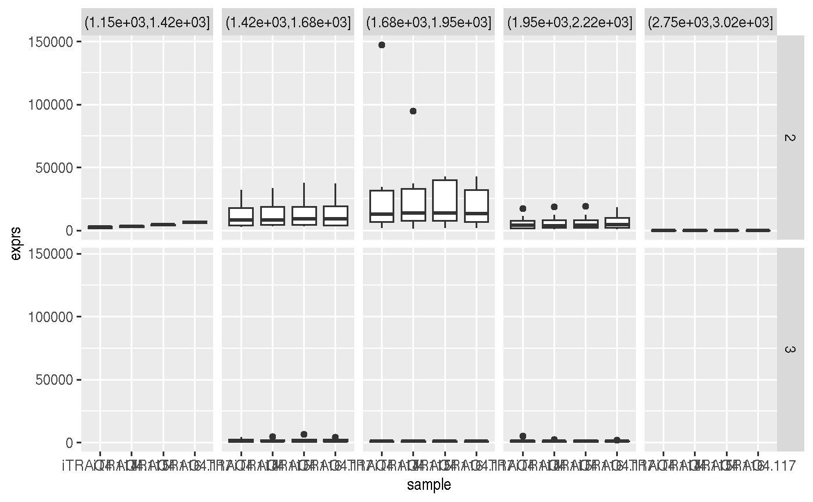

A Grammar of Data Manipulation for Omics Experiments
Laurent Gatto
Source:vignettes/tidies.Rmd
tidies.RmdIntroduction
The tidies package (from to contraction of tidy eSet) implements tidy principles as defined in the tidyverse packages to omics-type data based on the eSet class, with (currently at least for now), an emphasis on quantitative proteomics data.
High throughput data and the eSet class
The motivation to store omics data in dedicated containers is to coordinate the high throughput data (e.g., gene or protein expression), the sample annotation (phenotype data) and the feature annotation (feature data).
A typical omics data structure, as defined by the eSet class, is represented below. It’s main features are
An assay data slot containing the quantitative omics data (expression data), stored as a
matrixand accessible withexprs. Features defined along the rows and samples along the columns.A sample metadata slot containing sample co-variates, stored as an annotated
data.frameand accessible withpData. This data frame is stored with rows representing samples and sample covariate along the columns, and its rows match the expression data columns exactly.A feature metadata slot containing feature co-variates, stored as an annotated
data.frameand accessible withfData. This dataframe’s rows match the expression data rows exactly.

A typical omics data object
The coordinated nature of the high throughput data guarantees that the dimensions of the different slots will always match (i.e the columns in the expression data and then rows in the sample metadata, as well as the rows in the expression data and feature metadata) during data manipulation. The metadata slots can grow additional co-variates (columns) without affecting the other structures.
To illustrate such an omics data container, we’ll make use of the msnset object that comes with the MSnbase package, which contains data for 55 features and 4 samples.
library("MSnbase")
data(msnset)
## Some test sample groups
msnset$group <- c("A", "A", "B", "B")
dim(msnset)## [1] 55 4The expression data:
head(exprs(msnset))## iTRAQ4.114 iTRAQ4.115 iTRAQ4.116 iTRAQ4.117
## X1 1347.6158 2247.3097 3927.6931 7661.1463
## X10 739.9861 799.3501 712.5983 940.6793
## X11 27638.3582 33394.0252 32104.2879 26628.7278
## X12 31892.8928 33634.6980 37674.7272 37227.7119
## X13 26143.7542 29677.4781 29089.0593 27902.5608
## X14 6448.0829 6234.1957 6902.8903 6437.2303The sample metadata:
pData(msnset)## mz reporters group
## iTRAQ4.114 114.1 iTRAQ4 A
## iTRAQ4.115 115.1 iTRAQ4 A
## iTRAQ4.116 116.1 iTRAQ4 B
## iTRAQ4.117 117.1 iTRAQ4 BThe feature metadata:
fData(msnset)[1:10, 1:5]## spectrum ProteinAccession ProteinDescription
## X1 1 BSA bovine serum albumin
## X10 10 ECA1422 glucose-1-phosphate cytidylyltransferase
## X11 11 ECA4030 50S ribosomal subunit protein L4
## X12 12 ECA3882 chaperone protein DnaK
## X13 13 ECA1364 succinyl-CoA synthetase alpha chain
## X14 14 ECA0871 NADP-dependent malic enzyme
## X15 15 ECA4512 ATP synthase beta chain
## X16 16 ECA4513 ATP synthase gamma chain
## X17 17 ECA3969 fumarate reductase flavoprotein subunit
## X18 18 ECA3082 malate:quinone oxidoreductase
## PeptideSequence file
## X1 NYQEAK 1
## X10 VTLVDTGEHSMTGGR 1
## X11 SPIWR 1
## X12 TAIDDALK 1
## X13 SILINK 1
## X14 DFEVVNNESDPR 1
## X15 EGNDFYHEMTDSNVIDK 1
## X16 VMLQAYDEGR 1
## X17 ANAVVLATGGAGR 1
## X18 VATPEWQSK 1## all feature variables
fvarLabels(msnset)## [1] "spectrum" "ProteinAccession" "ProteinDescription"
## [4] "PeptideSequence" "file" "retention.time"
## [7] "precursor.mz" "precursor.intensity" "charge"
## [10] "peaks.count" "tic" "ionCount"
## [13] "ms.level" "acquisition.number" "collision.energy"Tidy tools
The tidy data definition and tidy tools manifesto lay out the principles that packages in the tidyverse package. tidies isn’t part of the tidyverse, but aims at applying these same principles. The concepts that are relevant for the application to omics data are
Reuse of existing data structures; in this case
eSetobjects, that constitute our tidy omics data.Compose simple functions with the pipe; here we apply the widely used dplyr functions and magrittr
%>%operator. Each of the adapted tidy function to use and return tidyeSetdata.Keep the ability to use existing Bioconductor functions that operate on the
eSetclass; this assumes that these functions are tidy themselves, i.e. that they return aneSetobject.
The tidies package
The goal of this package is to support the dplyr function such as select, filter, group_by, summarise, … direcly on omics data containers described above. The function act on the respective variable and expression slots and preserve the object’s class.
Another approach is to convert the omics objects to tidy tibbles and work direcly with these. This can easily be done with the Bioconductor biobroom package, that will convert the 55 features by 4 samples into a 220 tibble:
library("biobroom")## Loading required package: broomtidy(msnset, addPheno = TRUE)## # A tibble: 220 x 6
## protein sample mz reporters group value
## <fct> <fct> <dbl> <fct> <chr> <dbl>
## 1 X1 iTRAQ4.114 114. iTRAQ4 A 1348.
## 2 X10 iTRAQ4.114 114. iTRAQ4 A 740.
## 3 X11 iTRAQ4.114 114. iTRAQ4 A 27638.
## 4 X12 iTRAQ4.114 114. iTRAQ4 A 31893.
## 5 X13 iTRAQ4.114 114. iTRAQ4 A 26144.
## 6 X14 iTRAQ4.114 114. iTRAQ4 A 6448.
## 7 X15 iTRAQ4.114 114. iTRAQ4 A 722.
## 8 X16 iTRAQ4.114 114. iTRAQ4 A 10155.
## 9 X17 iTRAQ4.114 114. iTRAQ4 A 2800.
## 10 X18 iTRAQ4.114 114. iTRAQ4 A 4459.
## # ... with 210 more rowsUsing biobroom::tidy drops the feature data that, sometimes, is important. It is possible to create dataframe that contains these metadata using the following approach. First, combine the expression data and the feature data into a single wide dataframe using ms2df
x <- MSnbase::ms2df(msnset)which then can be converted to a long, tidy, form with
fv <- fvarLabels(msnset)
library("tidyr")##
## Attaching package: 'tidyr'## The following object is masked from 'package:S4Vectors':
##
## expand## spectrum ProteinAccession ProteinDescription
## 1 1 BSA bovine serum albumin
## 2 10 ECA1422 glucose-1-phosphate cytidylyltransferase
## 3 11 ECA4030 50S ribosomal subunit protein L4
## 4 12 ECA3882 chaperone protein DnaK
## 5 13 ECA1364 succinyl-CoA synthetase alpha chain
## 6 14 ECA0871 NADP-dependent malic enzyme
## PeptideSequence file retention.time precursor.mz precursor.intensity
## 1 NYQEAK 1 1149.31 520.7833 3449020
## 2 VTLVDTGEHSMTGGR 1 1503.03 573.9539 7849420
## 3 SPIWR 1 1663.61 401.7392 41253600
## 4 TAIDDALK 1 1663.86 567.8339 23549500
## 5 SILINK 1 1664.08 488.3269 13025200
## 6 DFEVVNNESDPR 1 1664.32 782.8715 18405000
## charge peaks.count tic ionCount ms.level acquisition.number
## 1 2 1922 0 26413754 2 2
## 2 3 1376 0 24482281 2 11
## 3 2 1571 0 231075934 2 12
## 4 2 2397 0 247323187 2 13
## 5 2 2574 0 207247502 2 14
## 6 2 1829 0 115317275 2 15
## collision.energy sample exprs
## 1 40 iTRAQ4.114 1347.6158
## 2 40 iTRAQ4.114 739.9861
## 3 40 iTRAQ4.114 27638.3582
## 4 40 iTRAQ4.114 31892.8928
## 5 40 iTRAQ4.114 26143.7542
## 6 40 iTRAQ4.114 6448.0829to produce a dataframe with 220 rows corresponding to the original 55 features for the 4 samples, and, for each of these, the corresponding feature metadata.
Given that this coercion is often useful, it is implemented in as_tibble (see the example below).
Using tidies
We start by loading the tidies package (which also automatically loads and attaches magrittr for the %>% operator).
library("tidies")Select feature or sample variables
Select sample variables (updates only the phenotypic data)
msnset %>%
select(group) %>%
pData## group
## iTRAQ4.114 A
## iTRAQ4.115 A
## iTRAQ4.116 B
## iTRAQ4.117 BNote that the output of select(group) is an MSnSet - we pipe it directly into pData to demonstrate that only that variable was retained.
Select feature variables (updates only the feature data)
## All feature variables
fvarLabels(msnset)## [1] "spectrum" "ProteinAccession" "ProteinDescription"
## [4] "PeptideSequence" "file" "retention.time"
## [7] "precursor.mz" "precursor.intensity" "charge"
## [10] "peaks.count" "tic" "ionCount"
## [13] "ms.level" "acquisition.number" "collision.energy"## Select a single feature variable
msnset %>%
select(charge) %>%
fvarLabels## [1] "charge"## Select features using a pattern
msnset %>%
select(starts_with("Protein")) %>%
fvarLabels## [1] "ProteinAccession" "ProteinDescription"Select sample and feature variables
msnset %>%
select(group) %>%
select(starts_with("Prot"))## MSnSet (storageMode: lockedEnvironment)
## assayData: 55 features, 4 samples
## element names: exprs
## protocolData: none
## phenoData
## sampleNames: iTRAQ4.114 iTRAQ4.115 iTRAQ4.116 iTRAQ4.117
## varLabels: group
## varMetadata: labelDescription
## featureData
## featureNames: X1 X10 ... X9 (55 total)
## fvarLabels: ProteinAccession ProteinDescription
## fvarMetadata: labelDescription
## experimentData: use 'experimentData(object)'
## Annotation: No annotation
## - - - Processing information - - -
## Data loaded: Wed May 11 18:54:39 2011
## iTRAQ4 quantification by trapezoidation: Wed Apr 1 21:41:53 2015
## MSnbase version: 1.1.22Order data by it feature of sample variables
Arrange columns/samples
msnset %>%
arrange(desc(group)) %>%
pData## mz reporters group
## iTRAQ4.116 116.1 iTRAQ4 B
## iTRAQ4.117 117.1 iTRAQ4 B
## iTRAQ4.114 114.1 iTRAQ4 A
## iTRAQ4.115 115.1 iTRAQ4 AArrange rows/features and select feature variables
msnset %>%
arrange(charge) %>%
select(charge) %>%
fData %>% head## charge
## X1 2
## X11 2
## X12 2
## X13 2
## X14 2
## X16 2Return features and samples with matching conditions
Filter using feature variables
msnset %>%
filter(ProteinAccession == "ENO") %>%
exprs## iTRAQ4.114 iTRAQ4.115 iTRAQ4.116 iTRAQ4.117
## X27 147093.25030 94770.28613 42616.07457 21259.42497
## X46 5369.73246 1148.32171 NA 1313.44599
## X47 7384.83022 3935.30012 2370.02527 1115.75006
## X55 15.11764 15.68074 14.23333 14.03018Filter using phenotypic (samples) variables
msnset %>%
filter(group == "A") %>%
exprs %>%
head## iTRAQ4.114 iTRAQ4.115
## X1 1347.6158 2247.3097
## X10 739.9861 799.3501
## X11 27638.3582 33394.0252
## X12 31892.8928 33634.6980
## X13 26143.7542 29677.4781
## X14 6448.0829 6234.1957Filter on both feature and sample variables
## iTRAQ4.114 iTRAQ4.115
## X27 147093.25030 94770.28613
## X46 5369.73246 1148.32171
## X47 7384.83022 3935.30012
## X55 15.11764 15.68074Group by one or more feature or sample variables
Group by features
msnset %>%
group_by(ProteinAccession) %>%
show## Grouped_eSet (storageMode: lockedEnvironment)
## assayData: 55 features, 4 samples
## element names: exprs
## protocolData: none
## phenoData
## sampleNames: iTRAQ4.114 iTRAQ4.115 iTRAQ4.116 iTRAQ4.117
## varLabels: mz reporters group
## varMetadata: labelDescription
## featureData
## featureNames: X1 X10 ... X9 (55 total)
## fvarLabels: spectrum ProteinAccession ... collision.energy (15
## total)
## fvarMetadata: labelDescription
## experimentData: use 'experimentData(object)'
## Annotation: No annotation
## - - - Processing information - - -
## Data loaded: Wed May 11 18:54:39 2011
## iTRAQ4 quantification by trapezoidation: Wed Apr 1 21:41:53 2015
## MSnbase version: 1.1.22
## Groups:
## features ProteinAccession [ 40 ]
## samples [ 0 ]Group by samples
msnset %>%
group_by(group) %>%
show## Grouped_eSet (storageMode: lockedEnvironment)
## assayData: 55 features, 4 samples
## element names: exprs
## protocolData: none
## phenoData
## sampleNames: iTRAQ4.114 iTRAQ4.115 iTRAQ4.116 iTRAQ4.117
## varLabels: mz reporters group
## varMetadata: labelDescription
## featureData
## featureNames: X1 X10 ... X9 (55 total)
## fvarLabels: spectrum ProteinAccession ... collision.energy (15
## total)
## fvarMetadata: labelDescription
## experimentData: use 'experimentData(object)'
## Annotation: No annotation
## - - - Processing information - - -
## Data loaded: Wed May 11 18:54:39 2011
## iTRAQ4 quantification by trapezoidation: Wed Apr 1 21:41:53 2015
## MSnbase version: 1.1.22
## Groups:
## features [ 0 ]
## samples group [ 2 ]Group by features and samples
msnset %>%
group_by(ProteinAccession) %>%
group_by(group) %>%
show## Grouped_eSet (storageMode: lockedEnvironment)
## assayData: 55 features, 4 samples
## element names: exprs
## protocolData: none
## phenoData
## sampleNames: iTRAQ4.114 iTRAQ4.115 iTRAQ4.116 iTRAQ4.117
## varLabels: mz reporters group
## varMetadata: labelDescription
## featureData
## featureNames: X1 X10 ... X9 (55 total)
## fvarLabels: spectrum ProteinAccession ... collision.energy (15
## total)
## fvarMetadata: labelDescription
## experimentData: use 'experimentData(object)'
## Annotation: No annotation
## - - - Processing information - - -
## Data loaded: Wed May 11 18:54:39 2011
## iTRAQ4 quantification by trapezoidation: Wed Apr 1 21:41:53 2015
## MSnbase version: 1.1.22
## Groups:
## features ProteinAccession [ 40 ]
## samples group [ 2 ]Summarise the expression values of a dataset
Grouping and summarising by features
msnset %>%
group_by(charge) %>%
summarise(median(exprs, na.rm = TRUE)) %>%
exprs## iTRAQ4.114 iTRAQ4.115 iTRAQ4.116 iTRAQ4.117
## 2 6916.4565 6099.295 6436.630 7715.448
## 3 982.4017 1119.316 1048.691 1175.080msnset %>% group_by(ProteinAccession) %>%
summarise(median(exprs, na.rm = TRUE)) %>%
exprs %>%
head## iTRAQ4.114 iTRAQ4.115 iTRAQ4.116 iTRAQ4.117
## BSA 1347.616 2247.310 3927.693 7661.1463
## ECA0172 17593.548 18545.620 19361.837 18328.2365
## ECA0435 4923.628 5557.818 5775.203 5079.2952
## ECA0452 1524.148 1399.897 1547.218 1563.2299
## ECA0469 1069.945 1035.689 1029.420 999.6957
## ECA0621 1101.062 1124.167 1140.093 1191.8055Grouping and summarising by samples
msnset %>% group_by(group) %>%
summarise(mean(exprs, na.rm = TRUE)) %>%
exprs %>%
head## A B
## X1 1797.4628 5794.4197
## X10 769.6681 826.6388
## X11 30516.1917 29366.5078
## X12 32763.7954 37451.2196
## X13 27910.6161 28495.8100
## X14 6341.1393 6670.0603Grouping by features and samples
msnset %>%
group_by(charge) %>%
summarise(mean(exprs)) %>%
group_by(group) %>%
summarise(max(exprs, na.rm = TRUE)) %>%
exprs## A B
## 2 13880.38 12660.236
## 3 1477.78 1346.071In the following example, we show how dplyr and MSnbase (here we using filterNA, combineFeatures and normalise) functions oberate seamlessly and can be mixed and matched with in chain of operations:
msnset %>%
filterNA() %>%
combineFeatures(method = "median", fcol = "ProteinAccession") %>%
group_by(group) %>%
summarise(mean(exprs)) %>%
normalise(method = "quantiles") %>%
filter(ProteinAccession %in% c('ENO', 'BSA')) %>%
exprs## A B
## BSA 1462.295 4355.662
## ENO 41383.731 11272.133In this last example, we use as_tibble and pipe the mutated data directly into ggplot2:
library("ggplot2")
msnset %>% as_tibble %>%
mutate(rt = cut(retention.time, 7)) %>%
ggplot(aes(x = sample, y = exprs)) +
geom_boxplot() + facet_grid(charge ~ rt)## Warning: Removed 1 rows containing non-finite values (stat_boxplot).
Future work
See issues, and the TODO issue in particular for current and future work. Depending on interest, the functionality presented here could be extended to other data types such as SummarizedExperiments.
A technical issue is with the dependency on both Bioconductor and the tidyverse is the recurrent name clashes:

Bioconductor and tidyverse conflicts
The combine function, for example, is defined as a generic with signature combine(x, y, ...) in BiocGenerics, while it is combine(...) in dplyr.